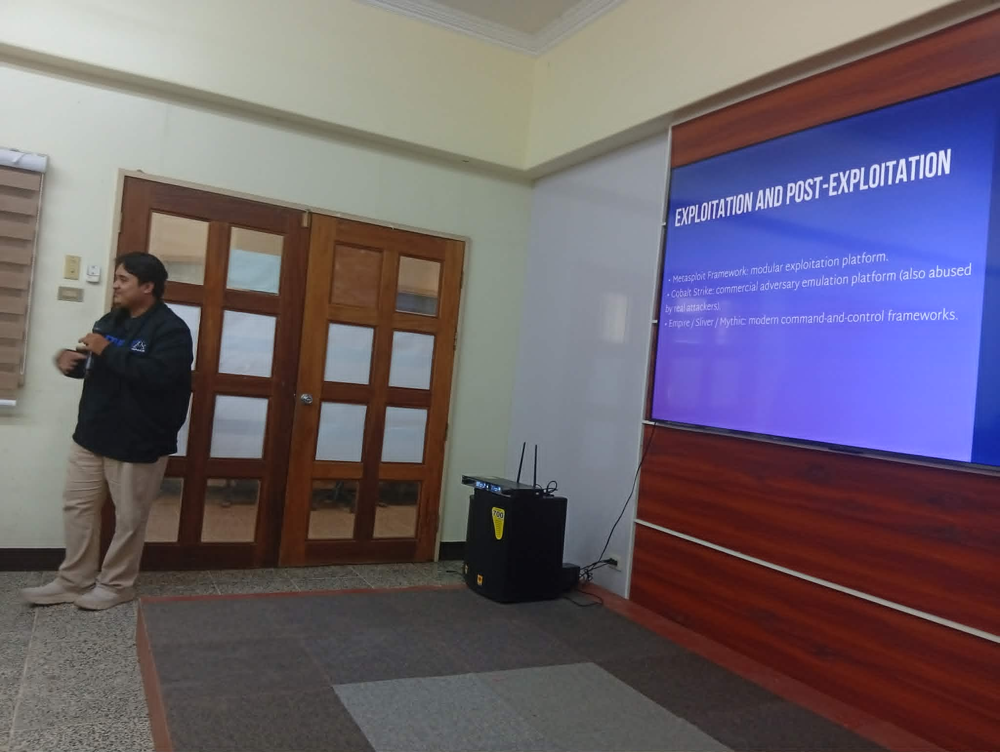

BPAP delivered a 3-day technical cybersecurity training for the IT and CERT teams of the Provincial Government of Davao del Norte, held September 1-3, 2026 under the province's Cybersecurity Management Project of the E-Governance Program, facilitated by Interim President Ferdie James Nervida.
The program walked participants through real-world incident response scenarios covering containment, evidence handling, and coordination with CERT-PH and the National Privacy Commission, alongside hands-on modules on attack techniques, defensive countermeasures, and vulnerability assessment and penetration testing (VAPT).

Day 3 closed with an orientation to the province's Cybersecurity Maturity Framework and Provincial Cybersecurity Plan 2026-2028, giving the eGovernance Team a clear, practical understanding of how the framework is applied to assess and advance institutional cyber resilience.

The engagement reflects BPAP's continued work extending blockchain and cybersecurity capability-building into public sector institutions across the Philippines, building on the association's broader education and ecosystem-development mandate.